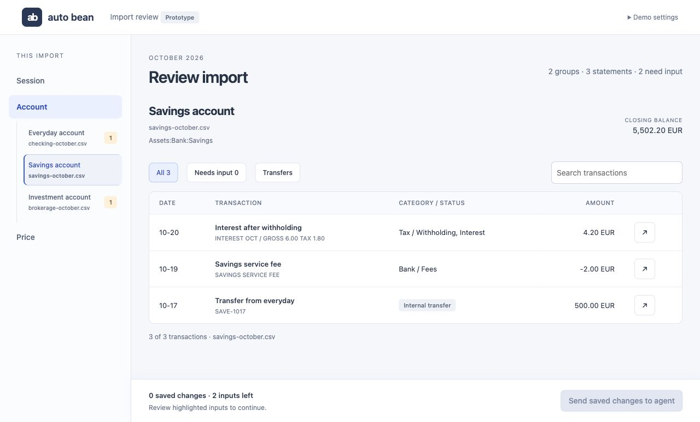

Samuel A.
I’m an engineer building AI and data systems, with experience across defense, manufacturing and energy.
Experience
May 2026 — Present
OpenAI
Applied AI Engineer
- Partner with digital-native customers to design, build and optimize agentic products.
- Build agent harnesses and evaluations to test tool use, diagnose failures and improve reliability.
- Translate customer challenges across OpenAI’s models, APIs and applications into actionable feedback for Research and Engineering teams.
2022 — 2026
Palantir
Forward Deployed Engineer
Technical Lead · Defense
- Operated on-premises infrastructure for thousands of users and built production data applications.
- Built monitoring pipelines, API connectors, alerting and fleet-health tools across data and infrastructure.
- Planned a major OS migration and wrote validation scripts for Linux, networks and databases.
- Tuned data pipelines, indexing and VM infrastructure to achieve 10-second p90 search latency.
Forward Deployed Engineer · Automotive
- Deployed the Palantir platform at a new customer and built live plant monitoring to improve machine utilization.
- Worked with customers and Product Development to turn field needs into technical solutions.
Forward Deployed Engineer · Customer Support
- Helped build Palantir’s customer support platform at scale.
2020 — 2022
Dalkia
Data Scientist
- Designed and deployed multi-site ML-based heating control, achieving up to 30% energy savings.
- Built heating-network anomaly detection to reduce technician intervention time.
Side projects
A Codex plugin for importing statements and managing Beancount ledgers.

Import review prototype · Demo data